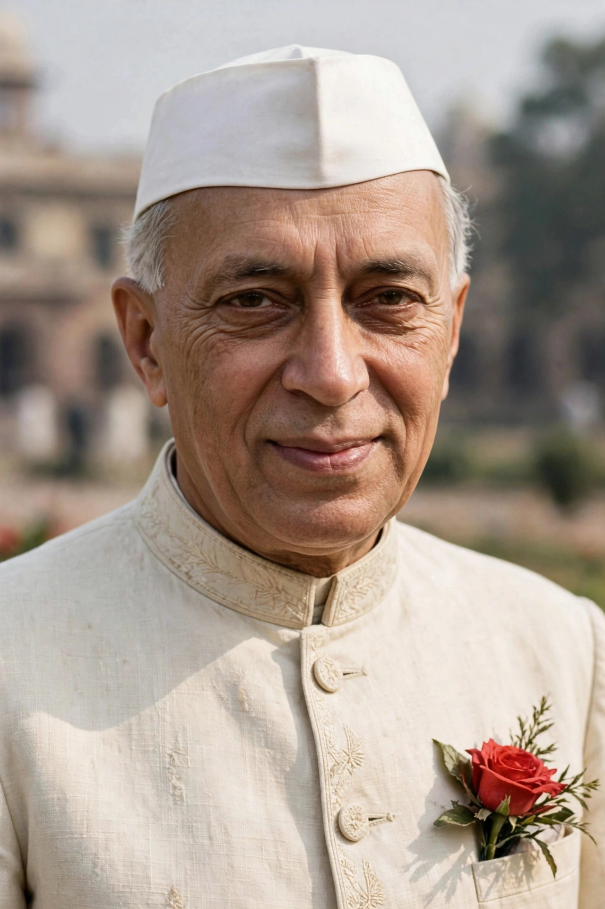

| Jawaharlal Nehru | |
|---|---|
 | |
| Prime Minister of India | 15 August 1947 – 27 May 1964 |
| Born | 14 November 1889, Allahabad, British India |
| Died | 27 May 1964 (aged 74), New Delhi, India |
| Political party | Indian National Congress |
| Spouse | Kamala Kaul (m. 1916; d. 1936) |
| Children | Indira Gandhi |
Jawaharlal Nehru (14 November 1889 – 27 May 1964) was an Indian anti-colonial nationalist, statesman and author who was a central figure in India during the middle of the 20th century. He was a principal leader of the Indian nationalist movement in the 1930s and 1940s and, upon India's independence in 1947, served as the country's first prime minister for 17 years. Nehru promoted parliamentary democracy, secularism and science and technology, and in foreign affairs he steered India clear of the two blocs of the Cold War as a leading figure of the Non-Aligned Movement.
Nehru was born in Allahabad into a wealthy Kashmiri Pandit family; his father, Motilal Nehru, was a prominent lawyer and twice president of the Indian National Congress. Educated at home and then at Harrow School and Trinity College, Cambridge, he read natural sciences before qualifying as a barrister at the Inner Temple in London. Returning to India in 1912, he was drawn into nationalist politics and became a close associate of Mahatma Gandhi. He spent much of the interwar period in British prisons — altogether some nine years — for his part in the non-cooperation and civil disobedience movements.
On the eve of independence Nehru delivered his celebrated "Tryst with Destiny" speech to the Constituent Assembly in New Delhi. As prime minister he oversaw the drafting of India's constitution, the integration of the princely states, and the reorganisation of states on linguistic lines. Domestically he pursued socialist-inspired economic planning through Five-Year Plans, founded institutions such as the Indian Institutes of Technology, and promoted landmark projects in steel, irrigation and atomic energy while maintaining a democratic and secular state. His commitment to free elections and civil liberties helped entrench democracy in India.
Nehru was the architect of Indian foreign policy: he co-founded the Non-Aligned Movement with leaders such as Gamal Abdel Nasser of Egypt and Tito of Yugoslavia, and signed the Panchsheel agreement of five principles of peaceful coexistence with China in 1954. Relations with China deteriorated over the Himalayan border, culminating in the Sino-Indian War of 1962, in which India's defeat badly damaged Nehru's prestige and health. He died in office on 27 May 1964 and was succeeded by Lal Bahadur Shastri. His daughter, Indira Gandhi, later became prime minister. His birthday, 14 November, is celebrated in India as Children's Day.
Nehru's books include Glimpses of World History (1934), An Autobiography (1936) and The Discovery of India (1946), much of it written in prison.